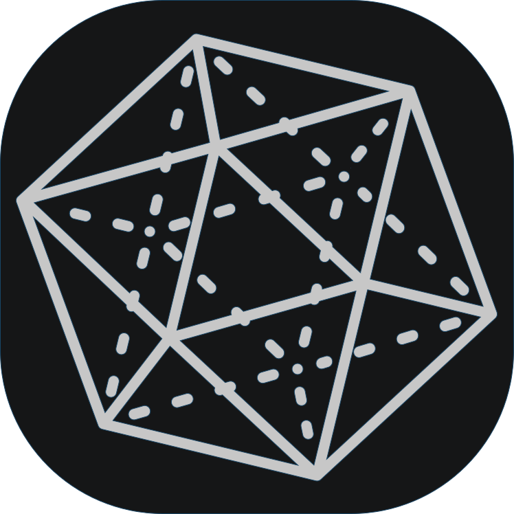

Cleanup preserves current and protected tabs. Review before closing.
Checking tabs…
Duplicate review
Targets are checked again before closing.

Checking tabs…
Cleanup preserves current and protected tabs. Review before closing.
Targets are checked again before closing.